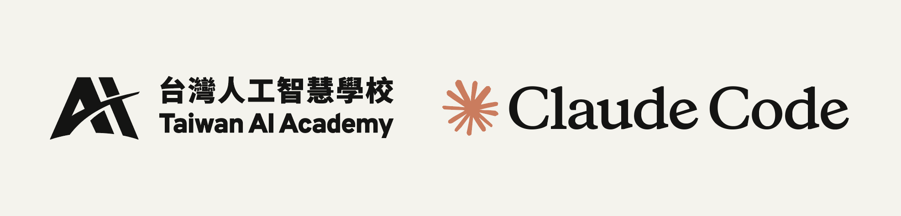

AIA x Claude Code
重要時程
上傳初選資料
請依以下三個面向準備您的投稿文件。
背景與技術。介紹您的團隊組成、專業背景，以及擁有的核心技術能力。
Claude Code 應用場景、痛點、流程與架構方法。說明您如何利用 Claude Code 解決真實問題。
對組織內或組織外產生效益的量化與質化指標。展示可衡量的成果與潛在影響力。
上傳您的 3 頁 PDF，展示您最具創意的 Claude Code 應用案例，入選團隊將獲得在大會展示的機會。
截止日期：2025 年 5 月 13 日（三）中午 12:00